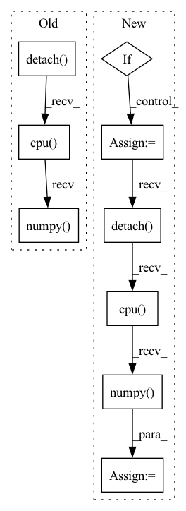

Pattern ID :18434
Before Change
// Draw keypoint matches
src = out["src_rc"][-1].squeeze().detach().cpu().numpy()
tgt = out["tgt_rc"][-1].squeeze().detach().cpu().numpy()
match_weights = np.exp(out["match_weights"][-1].squeeze().detach().cpu().numpy() )
keypoint_ints = out["keypoint_ints"]
ids = torch.nonzero(keypoint_ints[-1, 0] > 0, as_tuple=False).squeeze(1)After Change
// Draw scores
scores = out["scores"][-1]
if scores.size(0) == 3:
scores = scores[1] + scores[2]
scores = scores.squeeze().detach().cpu().numpy()
plt.imshow(scores, cmap="inferno")
plt.colorbar()
plt.title("log det weight (weight score vis)")
score_img = convert_plt_to_tensor()In pattern: SUPERPATTERN
Frequency: 3
Non-data size: 9
Instances Fragment ID: 60235650
Project Name: utiasasrl/hero_radar_odometry
Commit Name: c1043c84c77f1a20b667d981d4cd286cb378c71a
Time: 2021-01-25
Author: david.yoon@robotics.utias.utoronto.ca
File Name: utils/vis.py
M Class Name: AnonimousClass
N Class Name: AnonimousClass
M Method Name: draw_batch_steam(3)
N Method Name: draw_batch_steam(3)
M Parent Class:
N Parent Class:
M File Name: utils/vis.py
N File Name: utils/vis.py
M Start Line: 55
M End Line: 134
N Start Line: 95
N End Line: 122
Before Change
)
return fig, ax
residuals = (target[window] - sample_image[window]).data.detach().cpu().numpy()
if target.has_mask:
residuals[target[window].mask.detach().cpu().numpy()] = np.nan
if center_residuals:After Change
return fig, ax
residuals = (target[window] - sample_image[window]).data
if normalize_residuals:
residuals = residuals / torch.sqrt(sample_image[window].data)
residuals = residuals.detach().cpu().numpy()
if target.has_mask:
residuals[target[window].mask.detach().cpu().numpy()] = np.nan
if center_residuals: Fragment ID: 60235633
Project Name: connorstoneastro/autoprof
Commit Name: c86e7af5e40ef43bc0bbb2b8bd516fbac7ed0828
Time: 2023-04-29
Author: connorstone628@gmail.com
File Name: autoprof/plots/image.py
M Class Name: AnonimousClass
N Class Name: AnonimousClass
M Method Name: residual_image(10)
N Method Name: residual_image(9)
M Parent Class:
N Parent Class:
M File Name: autoprof/plots/image.py
N File Name: autoprof/plots/image.py
M Start Line: 156
M End Line: 156
N Start Line: 132
N End Line: 188
Before Change
device = layer._modules["_module_to_wrap"].bias.device
use_cuda = utils.is_model_on_gpu(layer)
quant_dequant_weight = get_quantized_dequantized_weight(layer, use_cuda).detach().cpu().numpy()
weight_tensor = layer._modules["_module_to_wrap"].weight
weight_tensor = weight_tensor.detach().cpu().numpy()
bias_tensor = libpymo.TensorParamBiasCorrection()After Change
weight_tensor = layer._modules["_module_to_wrap"].weight
// Transpose weights to C, N, H, W from N, C, H, W since axis are flipped for transposed conv
if isinstance(layer._modules["_module_to_wrap"], torch.nn.ConvTranspose2d):
weight_tensor = weight_tensor.permute(1, 0, 2, 3)
quant_dequant_weight = quant_dequant_weight.permute(1, 0, 2, 3)
quant_dequant_weight = quant_dequant_weight.detach().cpu().numpy()
weight_tensor = weight_tensor.detach().cpu().numpy()
bias_tensor = libpymo.TensorParamBiasCorrection()
bias_tensor.data = layer._modules["_module_to_wrap"].bias.detach().cpu().numpy() Fragment ID: 60235646
Project Name: quic/aimet
Commit Name: edf449bce5cb2bbf6c2d7443e2becb46540224ed
Time: 2020-08-14
Author: 63610745+quic-mangal@users.noreply.github.com
File Name: TrainingExtensions/torch/src/python/aimet_torch/bias_correction.py
M Class Name: AnonimousClass
N Class Name: AnonimousClass
M Method Name: call_analytical_mo_correct_bias(3)
N Method Name: call_analytical_mo_correct_bias(3)
M Parent Class:
N Parent Class:
M File Name: TrainingExtensions/torch/src/python/aimet_torch/bias_correction.py
N File Name: TrainingExtensions/torch/src/python/aimet_torch/bias_correction.py
M Start Line: 178
M End Line: 180
N Start Line: 178
N End Line: 219